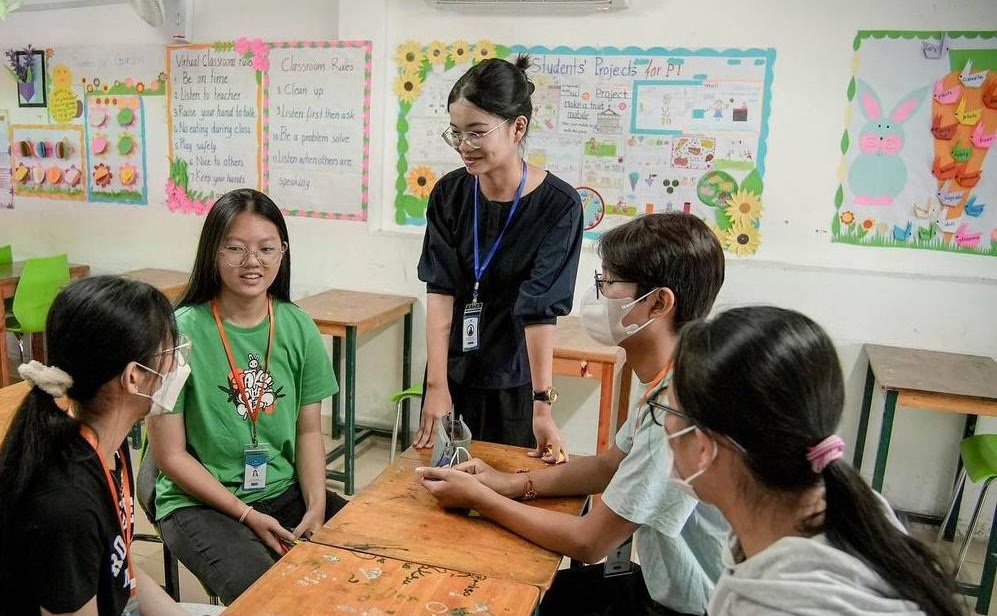
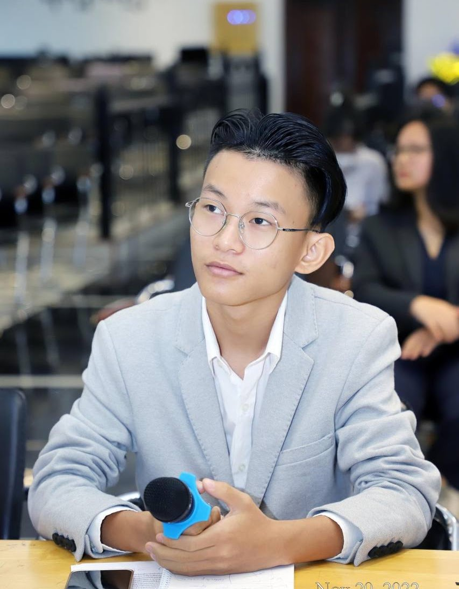
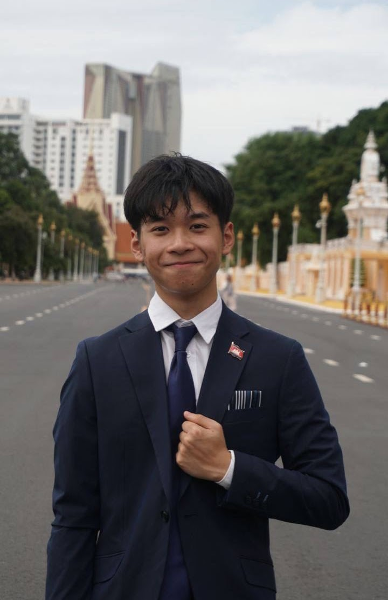
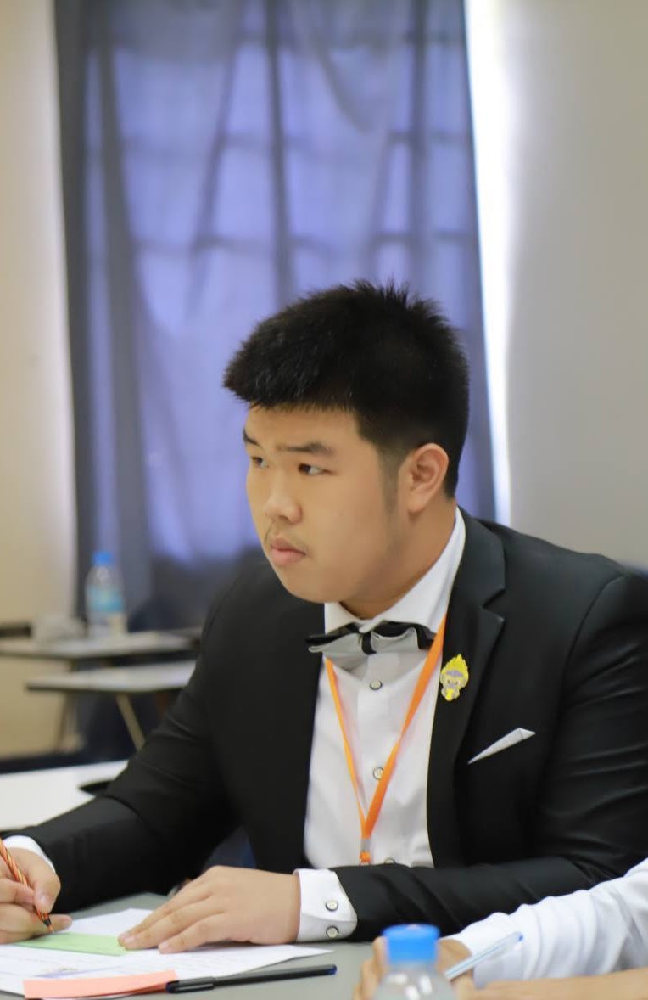
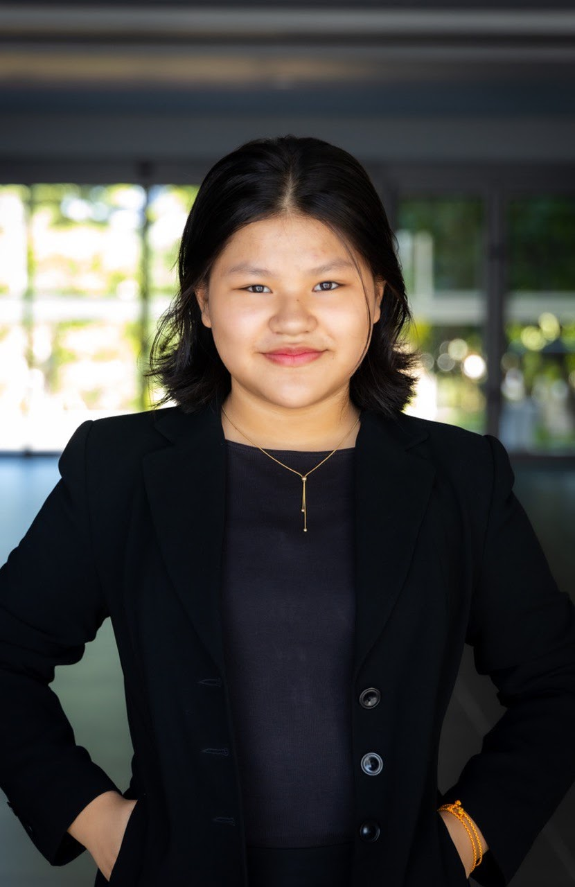

Individual Attention
Every student gets extensive 1-on-1 attention in thoughtfully designed methods.

Voice Of the Youth is the only organization in Cambodia that offers a Debate and Public Speaking tutoring service for you to learn from former champions at a customized pace based on your schedule and skill.

Every student gets extensive 1-on-1 attention in thoughtfully designed methods.
Our online, physical, evenings and weekends approach provides the flexibility necessary for students to rigorously develop public speaking & debate skills while having the freedom to pursue other activities. Our schedule is designed to give you the ability to make public speaking and debate work around your child's busy schedule.
Our trainers come from diverse backgrounds. Students are taught core public speaking & debate focus areas from highly experienced trainers who have excelled at the highest levels in this area. Students may choose their own trainer from our group of instructors to accelerate their growth!
Is your tournament coming up soon and you are not confident with the competition’s format? Schedule a session with our expert trainers and choose any format ranging from the WSC Debate Format to the WSDC Debate Format.
Each track has beginner, intermediate, and advanced versions, and depending on the students individual learning assessment, we strategy and plan of attack for each student custom to their needs. Whether you are a beginner, a teenager or an adult, this service is for all of you!
From surprise guest speakers, to workshops, to live analysis of high profile public speaking and debates, we are constantly providing fun, new activities for our students!
Speech and Debate is most effective when it’s iterative and consistent. You don’t train only when it is convenient. The benefits from participating in academic debate are most impactful when students and instructors have the time to build strong argumentative bases and develop skill-sets over time. We offer subscription based tutoring to students interested in improving the art of public speaking or debate. Our approach to tutoring is uniquely individualised and detailed.
| Offering | Online | On-site |
|---|---|---|
| Listed tuition | $90/person or a group of 6 | $170/group of 6 |
| Duration | 4 weeks, every Saturday and Sunday | 4 weeks, every Saturday and Sunday |
| Session length | 2 hours | 2 hours |
| Location | Google Meet | Kung Fu Tea IFL |
Voice Of the Youth is proud to have highly accomplished tutoring instructors. Our trainers have championed every major regular season and postseason national championship around the world and represent a collection of the most successful debaters in history. You can pick specific instructors to work with, subject to availability. All our available instructors are listed below along with their current experience level. Click on any instructors to read their bio and background.



